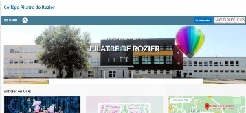

Attention:
Ce site est uniquement fait pour les élèves de la 3ème4.
En bas de page est notée la date de mise à jour du site.
Le site est au minimum mis à jour deux fois par jour
Ce site ne vous dispense pas de regarder l'ENT car vous pouvez toujours avoir des messages personnnels par vos professeurs.
Pour aller sur le site du collège: cliquez sur l'image ci-dessous

Les leçons
Les devoirs
Prochaines visio-conférence
L'emploi du temps
Mis à jour: Mercredi 28 avril à 11h54